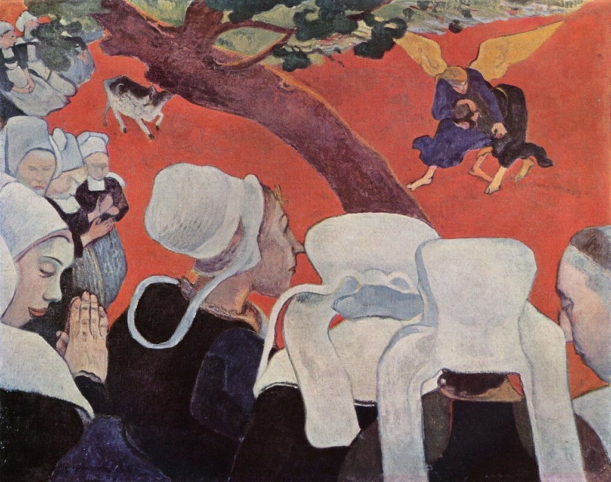

<head>
<meta charset="UTF-8" />
<meta name="keywords" content="drawing, painting" />
<meta name="description" content="drawings by Sunjy" />
<title>Sunjy</title>
<link rel="shortcut icon" type="image/x-icon" href="../../mImages/mCommon/favicon.ico" media="screen" />
<link rel="stylesheet" type="text/css" href="../../mCsses/mCommon/mCssA.css" />
<link rel="stylesheet" type="text/css" href="../../mCsses/mCommon/mCssB.css" />
<link rel="stylesheet" type="text/css" href="../../mCsses/mCommon/mCssC.css" />
<link rel="stylesheet" type="text/css" href="../../mCsses/mCommon/mCssD.css" />
<link rel="stylesheet" type="text/css" href="../../mCsses/mContent/mCssA.css" />
<link rel="stylesheet" type="text/css" href="../../mCsses/mContent/mCssB.css" />
<link rel="stylesheet" type="text/css" href="../../mCsses/mContent/mCssC.css" />
<link rel="stylesheet" type="text/css" href="../../mCsses/mContent/mCssD.css" />
</head>
<script type="text/javascript" src="../../mScripts/mContent/mContentAA.js" /></script>
<script type="text/javascript" src="../../mScripts/mContent/mContentAB.js" /></script>
<script type="text/javascript" src="../../mScripts/mContent/mContentAC.js" /></script>
<script type="text/javascript" src="../../mScripts/mContent/mContentAD.js" /></script>
<script type="text/javascript"></script> 
<script type="text/javascript">
document.write('<div class="mImgAbsolute"></div>');
/*
document.write('<p class="mFontSizeBColor" />From a white paper...</p>');
document.write('<table class="center"><tr><td>');
document.write('');
document.write('</td></tr></table>');
*/
</script>


<script type="text/javascript">
document.write('<p class="mFontSizeBColor" />Vision after the Sermon</p>');
document.write('<p class="mFontSizeSColor" />“Vision after the Sermon” by Paul Gauguin depicts a scene from the Bible in which Jacob wrestles an angel. It illustrates this indirectly, through a vision that the women see after a sermon in church.<br><br>It was painted in Brittany, France, in 1888, where Gauguin focused increasingly on interpreting the religious subject matter in his unique personal way.<br><br>Gauguin was moving away from naturalism towards a more abstracted, even symbolic, manner of painting. The tale of Jacob wrestling an angel is from Genesis in the Old Testament.<br><br>The bold use of color, shape, and line in this painting reflects the influence of the Japanese woodblock prints that Gauguin owned.<br><br>While formal elements of Gauguin’s paintings reflect the impact of Japanese prints, his choice of subject and composition are uniquely his own.<br><br>As Gauguin developed the idea of non-naturalistic landscapes, he applied large areas of flat color to the piece. The red ground departs from the conventional representation of landscape views.<br><br>In portraying the watching figures, Gauguin experiments with the distortion of shapes, exaggerating features.<br><br>He uses sharp contour lines and not gradual shifts in tone. The brown trunk, black garments, white hats, and red fields are painted with minimal color shading.<br><br>The painting also potentially has some interesting symbolism:<br>•Is the apple tree, the tree of knowledge from Eden?<br>•Twelve Breton women and a priest watch the event. Is 12 representing Jacob’s offspring and the 12 tribes of Israel?<br>•The tree divides the painting into two parts. The vision and the faithful?<br><br>Gauguin described this painting to his friend Vincent Van Gogh:<br><br>“I think I have achieved in the figures a great simplicity, rustic and superstitious. …<br>For me, in this picture, the landscape and the struggle exist only in the imagination of the people praying after the sermon,<br> which is why there is a contrast between the people and the struggle,<br> in its non-natural, disproportionate landscape.”<br></p>');
document.write('<table class="center" /><tr><td>');
document.write('<br>It was painted in Brittany, France, in 1888, where Gauguin focused increasingly on interpreting the religious subject matter in his unique personal way.<br><br>Gauguin was moving away from naturalism towards a more abstracted, even symbolic, manner of painting. The tale of Jacob wrestling an angel is from Genesis in the Old Testament.<br><br>The bold use of color, shape, and line in this painting reflects the influence of the Japanese woodblock prints that Gauguin owned.<br><br>While formal elements of Gauguin’s paintings reflect the impact of Japanese prints, his choice of subject and composition are uniquely his own.<br><br>As Gauguin developed the idea of non-naturalistic landscapes, he applied large areas of flat color to the piece. The red ground departs from the conventional representation of landscape views.<br><br>In portraying the watching figures, Gauguin experiments with the distortion of shapes, exaggerating features.<br><br>He uses sharp contour lines and not gradual shifts in tone. The brown trunk, black garments, white hats, and red fields are painted with minimal color shading.<br><br>The painting also potentially has some interesting symbolism:<br>•Is the apple tree, the tree of knowledge from Eden?<br>•Twelve Breton women and a priest watch the event. Is 12 representing Jacob’s offspring and the 12 tribes of Israel?<br>•The tree divides the painting into two parts. The vision and the faithful?<br><br>Gauguin described this painting to his friend Vincent Van Gogh:<br><br>“I think I have achieved in the figures a great simplicity, rustic and superstitious. …<br>For me, in this picture, the landscape and the struggle exist only in the imagination of the people praying after the sermon,<br> which is why there is a contrast between the people and the struggle,<br> in its non-natural, disproportionate landscape.”<br>" />');
document.write('</td></tr></table>');
</script>


